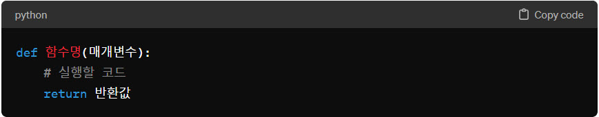
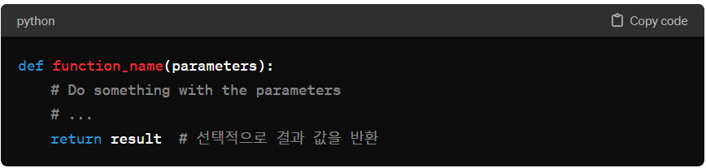

파이썬 함수에 대한 정의와 장점을 알려주세요
파이썬 함수에 대한 정의와 장점을 알려주세요
 파이썬에서 함수(function)는 코드의 재사용성을 높이고, 모듈화를 통해 프로그램의 구조를 개선하는 데 도움을 주는 중요한 개념입니다. 함수는 특정 작업을 수행하는 코드 블록으로 정의되며, 필요할 때마다 호출하여 사용할 수 있습니다.
파이썬에서 함수(function)는 코드의 재사용성을 높이고, 모듈화를 통해 프로그램의 구조를 개선하는 데 도움을 주는 중요한 개념입니다. 함수는 특정 작업을 수행하는 코드 블록으로 정의되며, 필요할 때마다 호출하여 사용할 수 있습니다.
함수의 정의
함수는 다음과 같은 구조를 가지고 있습니다: - def 키워드는 함수를 정의하기 시작함을 나타냅니다.
- 함수명은 함수를 호출할 때 사용하는 이름입니다.
- 매개변수는 함수가 받아들일 입력 값을 나타내며, 필수는 아닙니다.
- 함수 내부에는 함수가 수행할 작업을 나타내는 코드 블록이 위치합니다.
- return 문은 함수의 결과를 반환합니다. return 문은 선택적이며, 모든 함수가 값을 반환할 필요는 없습니다.
함수의 장점
- 코드의 재사용성(Reusability): 한 번 정의된 함수는 여러 위치에서 여러 번 호출할 수 있어, 동일한 코드를 반복해서 작성할 필요가 없습니다.
- 모듈화(Modularity) : 프로그램을 작고 관리하기 쉬운 부분으로 나눌 수 있어, 프로그램의 구조가 개선됩니다. 이는 유지보수와 디버깅을 용이하게 합니다.
- 가독성(Readability): 함수를 사용하여 프로그램을 여러 블록으로 나누면, 각 부분이 무엇을 하는지 이해하기 쉬워져 프로그램의 전체적인 가독성이 향상됩니다.
- 추상화(Abstraction): 함수는 복잡한 작업을 추상화하여, 사용자나 다른 프로그래머가 세부 구현을 몰라도 해당 기능을 사용할 수 있게 합니다.
- 재정의 가능성(Overriding): 상속 관계에 있는 클래스에서 부모 클래스의 함수를 자식 클래스에서 재정의할 수 있어, 객체 지향 프로그래밍의 유연성을 제공합니다.
파이썬 함수 선언에 대해 설명해주세요
파이썬에서 함수를 선언하는 것은 코드를 모듈화하고 재사용 가능하게 만드는 데 중요합니다. 함수는 특정 작업을 수행하는 코드 블록으로, 데이터를 받아들이고(선택적으로), 처리한 후 결과를 반환(선택적으로)할 수 있습니다.
선언 문법
함수 선언은 def 키워드로 시작합니다. 이어서 함수 이름을 작성하고, 괄호 안에 매개변수를 정의합니다. 괄호 다음에는 콜론(:)을 붙이고, 다음 줄부터 들여쓰기를 한 상태로 함수가 수행할 코드 블록을 작성합니다. 기본적인 함수 선언의 구조는 다음과 같습니다: 인자가 없는 함수
def greet():
return "Hello, World!"
매개변수가 있는 함수
def greet(name):
return f"Hello, {name}!"
여러 매개변수를 가지는 함수
def add(a, b):
return a + b
선택적 매개변수(기본값 설정)를 가지는 함수 선언
def greet(name, greeting="Hello"):
return f"{greeting}, {name}!"
파이썬 함수의 리턴값에 대해 설명해주세요
파이썬 함수의 리턴값은 함수가 수행된 후 호출자(caller)에게 반환하는 값입니다. 함수는 return 문을 사용하여 값을 반환할 수 있으며, 이를 통해 함수의 실행 결과를 호출자에게 전달합니다. 함수의 리턴값은 변수에 할당되거나, 다른 함수의 인자로 사용될 수 있습니다.
리턴값의 특징
- 단일 값 반환: 함수는 하나의 객체를 반환할 수 있으며, 이는 어떤 데이터 타입이든 될 수 있습니다(예: 숫자, 문자열, 리스트, 튜플, 딕셔너리 등).
- 다중 값 반환: 파이썬에서는 여러 값을 동시에 반환하는 것처럼 보일 수 있지만, 실제로는 튜플 형태로 단일 객체를 반환합니다. 호출자는 이 튜플을 여러 변수에 언패킹하여 각각의 값을 분리할 수 있습니다.
- 아무 값도 반환하지 않는 경우: return 문이 없거나 return만 단독으로 사용되는 경우, 함수는 None을 반환합니다. None은 파이썬의 "null" 값으로, 값이 없음을 의미합니다.
- 조건에 따른 다른 리턴값: 함수 내부에서 조건문을 사용하여, 조건에 따라 다른 값을 반환할 수 있습니다.
단일 값 반환 예시
def sum(a, b):
return a + b
result = sum(5, 3)
print(result) # 출력: 8
다중 값 반환 예시:
def get_user():
name = "John Doe"
age = 30
return name, age # 이름과 나이를 반환
user_name, user_age = get_user()
print(user_name, user_age) # 출력: John Doe 30
아무 값도 반환하지 않는 경우
def print_message(message):
print(message)
# 여기서는 return 문이 명시적으로 없습니다.
result = print_message("Hello, World!")
print(result) # 출력: None
조건에 따른 다른 리턴값:
def is_even(number):
if number % 2 == 0:
return True
else:
return False
print(is_even(5)) # 출력: False
print(is_even(4)) # 출력: True